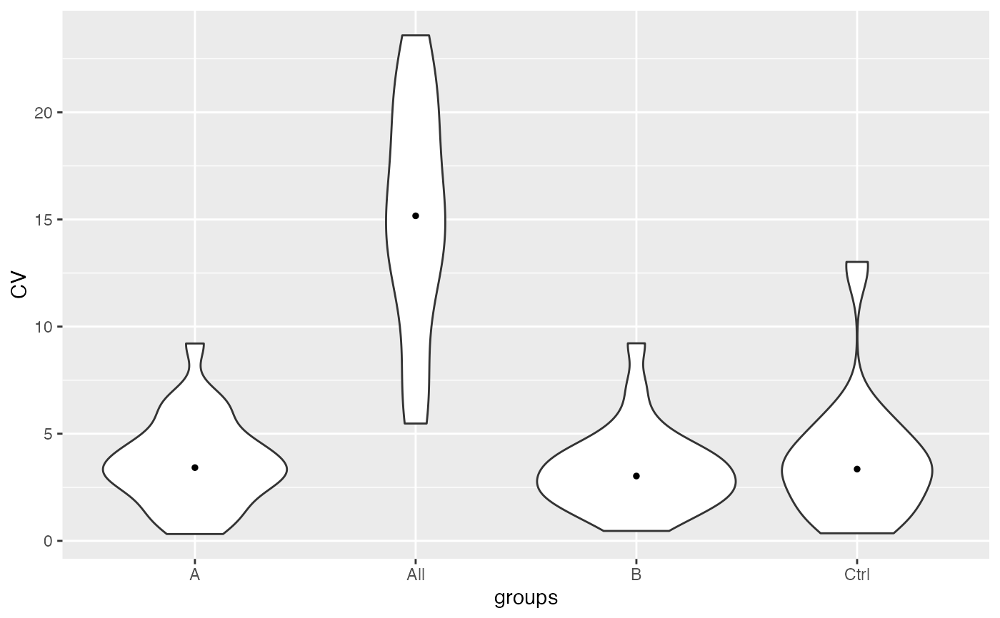

R/LFQDataStats.R
LFQDataStats.RdDecorates LFQData with methods to compute statistics of interactions
Decorates LFQData with methods to compute statistics of interactions
compute stdv, mean and CV per peptide or protein and condition.
Other LFQData:
LFQData,
LFQDataAggregator,
LFQDataPlotter,
LFQDataSummariser,
LFQDataToSummarizedExperiment(),
LFQDataWriter,
ProteinAnnotation
lfqLFQData
stateither CV or sd (if is_transformed)
statsdfframe with statistics.
new()create analyse variances and CV
LFQDataStats$new(lfqdata, stats = c("everything", "interaction", "all"))stats_quantiles()Determine CV or sd for the quantiles
LFQDataStats$stats_quantiles(probs = c(0.1, 0.25, 0.5, 0.75, 0.9))density_median()plot density or ecdf of CV or sd for the 50
LFQDataStats$density_median(ggstat = c("density", "ecdf"))power_t_test()compute sample for each protein
LFQDataStats$power_t_test(delta = c(0.59, 1, 2), power = 0.8, sig.level = 0.05)
# study variance of not normalized data
#source("c:/Users/wewol/prog/prolfqua/R/LFQData.R")
runallfuncs <- function(x){
stopifnot("data.frame" %in% class(x$stats()))
stopifnot("data.frame" %in% class(x$stats_wide()))
stopifnot(c("long", "wide") %in% names(x$stats_quantiles()))
stopifnot("ggplot" %in% class(x$density()))
stopifnot("ggplot" %in% class(x$density_median()))
stopifnot("ggplot" %in% class(x$density("ecdf")))
stopifnot("ggplot" %in% class(x$density_median("ecdf")))
stopifnot("ggplot" %in% class(x$violin()))
stopifnot("ggplot" %in% class(x$violin_median()))
stopifnot("ggplot" %in% class(x$stdv_vs_mean(size = 400)))
if(!x$lfq$is_transformed()){
stopifnot(is.null(x$power_t_test()))
stopifnot(is.null(x$power_t_test_quantiles()))
}
}
istar <- prolfqua_data('data_ionstar')$filtered()
#> Column added : nr_peptide_Id_IN_protein_Id
istar$config <- old2new(istar$config)
data <- istar$data |> dplyr::filter(protein_Id %in% sample(protein_Id, 100))
lfqdata <- LFQData$new(data, istar$config)
lfqstats <- lfqdata$get_Stats()
#> [1] "dilution."
#> completing cases
#> NULL
#> completing cases
lfqstats$stats_wide()
#> # A tibble: 776 × 20
#> protein_Id peptide_Id sd_a sd_b sd_c sd_d sd_e sd_All var_a
#> <chr> <chr> <dbl> <dbl> <dbl> <dbl> <dbl> <dbl> <dbl>
#> 1 CON__P02769~18~… AEFVEVTK 1.34e8 1.67e8 1.88e8 1.40e8 1.43e8 1.44e8 1.80e16
#> 2 CON__P02769~18~… DDPHACYST… 2.49e7 4.42e7 3.21e7 3.98e7 3.82e7 3.58e7 6.20e14
#> 3 CON__P02769~18~… DDPHACYST… 7.04e6 1.31e7 7.00e6 1.40e7 2.35e7 1.31e7 4.96e13
#> 4 CON__P02769~18~… ECCHGDLLE… 2.88e6 1.88e6 3.86e6 3.88e6 1.33e6 2.70e6 8.29e12
#> 5 CON__P02769~18~… ETYGDMADC… 1.16e7 6.78e6 6.04e6 7.70e6 3.73e6 7.69e6 1.35e14
#> 6 CON__P02769~18~… EYEATLEEC… 7.14e6 6.32e6 6.83e6 7.12e6 1.27e7 8.20e6 5.09e13
#> 7 CON__P02769~18~… FKDLGEEHFK 3.44e8 3.06e8 4.72e8 3.98e8 4.41e8 3.74e8 1.18e17
#> 8 CON__P02769~18~… HLVDEPQNL… 2.01e8 2.57e8 2.40e8 2.06e8 2.11e8 2.22e8 4.02e16
#> 9 CON__P02769~18~… HPEYAVSVL… 1.03e7 1.12e7 2.25e7 8.32e6 7.67e6 1.21e7 1.06e14
#> 10 CON__P02769~18~… HPYFYAPEL… 3.61e7 1.69e7 2.96e7 2.10e7 1.78e7 2.47e7 1.30e15
#> # ℹ 766 more rows
#> # ℹ 11 more variables: var_b <dbl>, var_c <dbl>, var_d <dbl>, var_e <dbl>,
#> # var_All <dbl>, CV_a <dbl>, CV_b <dbl>, CV_c <dbl>, CV_d <dbl>, CV_e <dbl>,
#> # CV_All <dbl>
lfqstats$violin()
#> Warning: Removed 428 rows containing non-finite outside the scale range
#> (`stat_ydensity()`).
#> Warning: Removed 428 rows containing non-finite outside the scale range
#> (`stat_summary()`).

runallfuncs(lfqstats)
#> Warning: data is not transformed - aborting
#> Warning: data is not transformed - aborting
x <- lfqstats
#study variance of normalized data
istar <- prolfqua_data('data_ionstar')$normalized()
istar$config <- old2new(istar$config)
istar$config$table$is_response_transformed
#> [1] TRUE
data <- istar$data |> dplyr::filter(protein_Id %in% sample(protein_Id, 100))
lfqdata <- LFQData$new(data, istar$config)
lfqdata$is_transformed(TRUE)
lfqstats <- lfqdata$get_Stats()
#> [1] "dilution."
#> completing cases
#> NULL
#> completing cases
runallfuncs(lfqstats)
#Slightly different dataset
bb <- prolfqua_data('data_ionstar')$filtered()
#> Column added : nr_peptide_Id_IN_protein_Id
bb$config <- old2new(bb$config)
stopifnot(nrow(bb$data) == 25780)
config <- bb$config$clone(deep = TRUE)
analysis <- bb$data
lfqdata <- LFQData$new(analysis, config)
# estimates statistics for all samples
lfqstats <- lfqdata$get_Stats(stats = "all")
#> NULL
#> completing cases
lfqstats$stats_wide()
#> # A tibble: 1,289 × 5
#> protein_Id peptide_Id sd_All var_All CV_All
#> <chr> <chr> <dbl> <dbl> <dbl>
#> 1 CON__P01030~9~NA AELADQAASWLTR 2328597. 5.42e12 39.6
#> 2 CON__P01030~9~NA ILSLAQDQVGGSAEK 4431780. 1.96e13 41.0
#> 3 CON__P01030~9~NA LLLFSPSVVR 1334426. 1.78e12 20.3
#> 4 CON__P02769~18~NA AEFVEVTK 143762754. 2.07e16 30.1
#> 5 CON__P02769~18~NA DDPHACYSTVFDK 35823473. 1.28e15 18.0
#> 6 CON__P02769~18~NA DDPHACYSTVFDKLK 13128257. 1.72e14 32.9
#> 7 CON__P02769~18~NA ECCHGDLLECADDRADLAK 2699720. 7.29e12 23.0
#> 8 CON__P02769~18~NA ETYGDMADCCEK 7686808. 5.91e13 40.4
#> 9 CON__P02769~18~NA EYEATLEECCAK 8201985. 6.73e13 37.7
#> 10 CON__P02769~18~NA FKDLGEEHFK 373733113. 1.40e17 33.4
#> # ℹ 1,279 more rows
runallfuncs(lfqstats)
#> Warning: data is not transformed - aborting
#> Warning: data is not transformed - aborting
lfqstats <- lfqdata$get_Stats(stats = "everything")
#> [1] "dilution."
#> completing cases
#> NULL
#> completing cases
lfqstats$stats_wide()
#> # A tibble: 1,289 × 20
#> protein_Id peptide_Id sd_a sd_b sd_c sd_d sd_e sd_All var_a
#> <chr> <chr> <dbl> <dbl> <dbl> <dbl> <dbl> <dbl> <dbl>
#> 1 CON__P0103… AELADQAAS… NA NA NA NA 3.21e6 2.33e6 NA
#> 2 CON__P0103… ILSLAQDQV… 4.93e6 6.58e6 3.63e6 2.94e6 3.83e6 4.43e6 2.43e13
#> 3 CON__P0103… LLLFSPSVVR 2.48e6 8.60e5 1.09e6 1.07e6 1.06e6 1.33e6 6.15e12
#> 4 CON__P0276… AEFVEVTK 1.34e8 1.67e8 1.88e8 1.40e8 1.43e8 1.44e8 1.80e16
#> 5 CON__P0276… DDPHACYST… 2.49e7 4.42e7 3.21e7 3.98e7 3.82e7 3.58e7 6.20e14
#> 6 CON__P0276… DDPHACYST… 7.04e6 1.31e7 7.00e6 1.40e7 2.35e7 1.31e7 4.96e13
#> 7 CON__P0276… ECCHGDLLE… 2.88e6 1.88e6 3.86e6 3.88e6 1.33e6 2.70e6 8.29e12
#> 8 CON__P0276… ETYGDMADC… 1.16e7 6.78e6 6.04e6 7.70e6 3.73e6 7.69e6 1.35e14
#> 9 CON__P0276… EYEATLEEC… 7.14e6 6.32e6 6.83e6 7.12e6 1.27e7 8.20e6 5.09e13
#> 10 CON__P0276… FKDLGEEHFK 3.44e8 3.06e8 4.72e8 3.98e8 4.41e8 3.74e8 1.18e17
#> # ℹ 1,279 more rows
#> # ℹ 11 more variables: var_b <dbl>, var_c <dbl>, var_d <dbl>, var_e <dbl>,
#> # var_All <dbl>, CV_a <dbl>, CV_b <dbl>, CV_c <dbl>, CV_d <dbl>, CV_e <dbl>,
#> # CV_All <dbl>
runallfuncs(lfqstats)
#> Warning: data is not transformed - aborting
#> Warning: data is not transformed - aborting